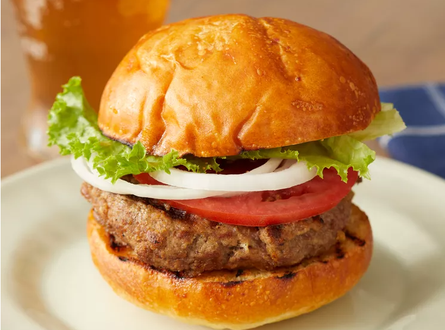

Burger

Description
A juicy, flavorful burger made with simple ingredients and perfect for any occasion.
Ingredients
- 1 lb ground beef (80/20 for best flavor)
- 1 tsp salt
- ½ tsp black pepper
- ½ tsp garlic powder
- 4 burger buns
Steps
- Prepare Patties: Mix ground beef with salt, pepper, and garlic powder.
Shape into 4 evenly-sized patties, pressing a slight indentation in the center of each.
- Cook Patties: Heat a skillet or grill over medium-high heat.
Cook patties for 3-4 minutes per side, adding cheese slices during the last minute if desired.
- Toast Buns: Lightly toast burger buns on the grill or in a pan until golden.
- Assemble Burgers: Place patties on the bottom bun and layer with desired toppings.
Add the top bun.
- Serve: Serve hot with your favorite sides like fries or salad.